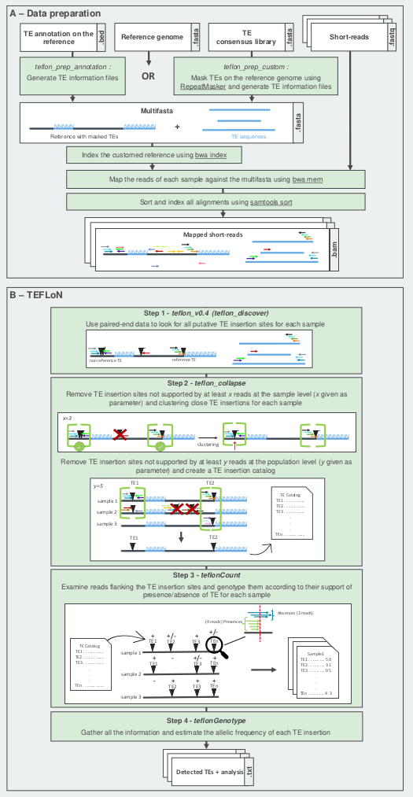

Welcome to TEFLoN2’s documentation!
TEFLoN2 is an improvement of TEFLoN. All improvements will allow it to be up to date, easier to use and more efficient.
Like TEFLoN, TEFLoN2 uses paired-end illumina sequence data to both discover transposable elements (TEs) and perform TE genotyping.
TEFLoN2 requires to prepare a specific mapping dataset (cf. figure 1.A). Then, one launches four individually automated scripts : It (cf. figure 1.B) detects all TE insertions (de novo and references TEs), then filter out low quality data to create a catalog of TE insertion, genotype them and finally estime their allele frequency.
TEFLoN2 can be run on high performance computers (bigmem), cluster or HPC cluste.